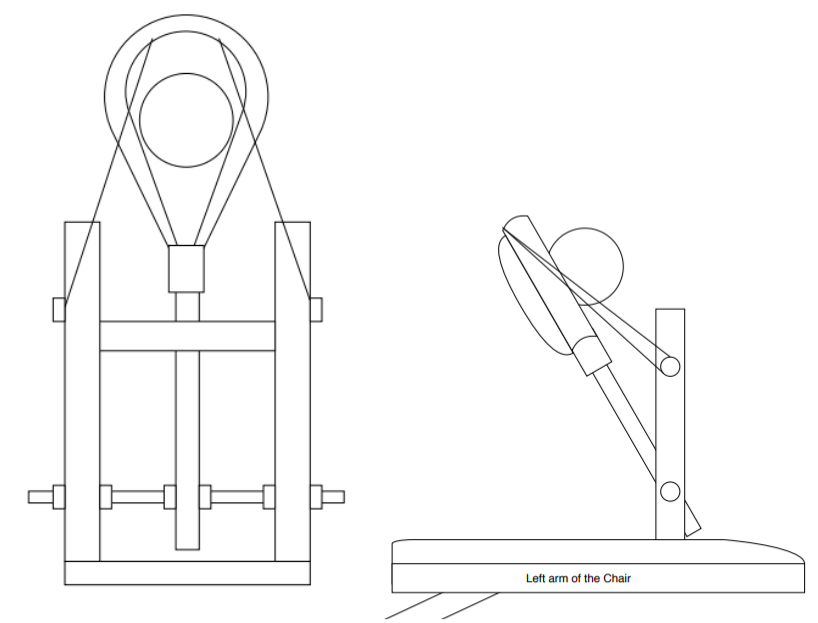
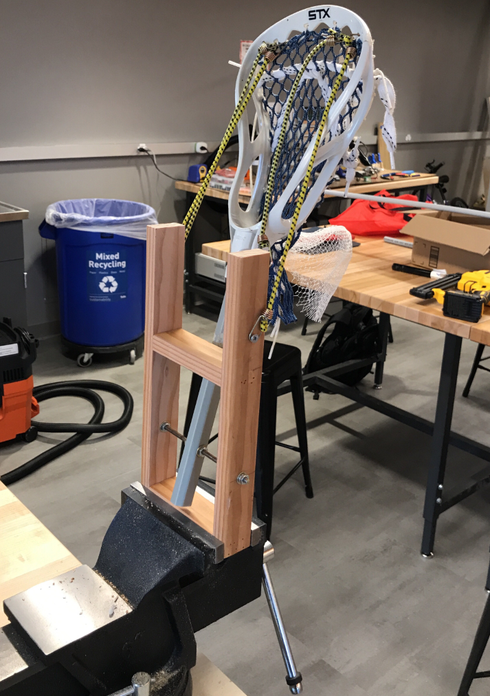
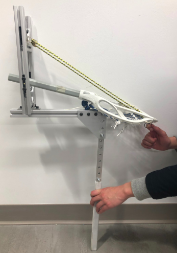
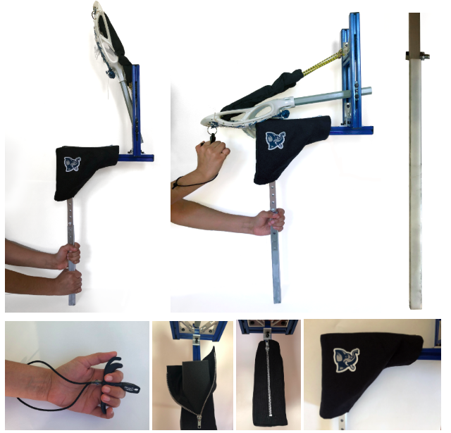

PRELIMINARY SKETCH

MAIN COMPONENTS
- Lacrosse Stick: cut and drilled to serve as the main component of our catapult design.
- Bungee Cords: provide the elasticity and energy
FIRST PROTOTYPE
WOODEN BASE

PROS
- Easy for Ryan to hold
- Ryan liked the athletic aspect to its aesthetic
- Small enough for Ryan to transport on chair
CONS
- Still needed wheelchair attachment
- Wood base not durable
- Difficult for Ryan to pull back far enough to launch ball a sufficient distance
SECOND PROTOTYPE
METAL BASE

PROS
- Durable
- Attached directly to middle of chair
- Ryan liked the simplicity of the device
CONS
- Heavy
- Attachment sometimes got stuck in chair
- Difficult for Ryan to recoil back
FINAL DESIGN
THE CATCHAPULT

PROS
- Addition of grip trigger allowed Ryan to load ball with much more ease
- Smaller chair attachment and plastic cover eased set up and transportation
- Added covers over screws and edges provided safety
CONS
- Still heavy
- Bungees could lose elasticity
On future iterations, we would hope to minimize these negatives and add consistency to the launcher's power and accuracy.
TAKEAWAYS
Accomodate the User. Understand his or her wants and needs. Ryan is an active, athletic guy who also has become his own designer for adaptive technology. Picking his brain was an invaluable source of knowledge that ultimately informed our design decisions. Listening to his concerns and suggestions took precedence in our design process.
Do Design Research. Don't reinvent the wheel. There are a ton of amazing devices readily available online within the realm of dog throwers and assistive technology alike. Our design was inspired by components of many already established tools and products.
Seek advice and feedback. Find knowledgable people outside of the project who can provide perspective. Our professors and peers, as well as occupational therapists and industry professionals, gave helpful suggestions and design directions that our team had overlooked or had not explored.